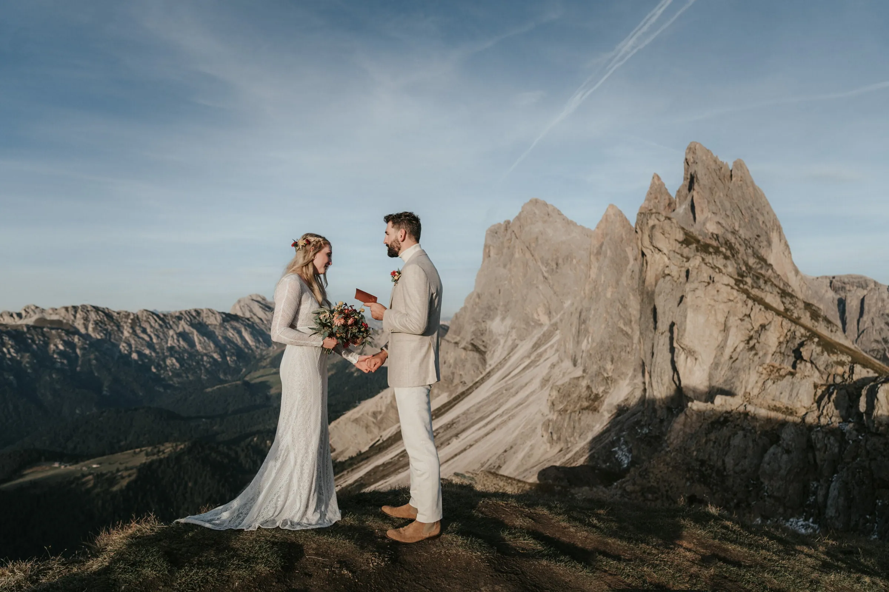

The Dolomites are not one landscape but a hundred. Pale limestone towers that turn rose at first light, turquoise lakes held in bowls of pine, meadows that smell of hay and altitude. It is the most photographed mountain range in Europe — and still, at half past five in the morning, you can stand at the edge of a lake and hear nothing but water.
That gap between the postcard and the reality is where a good elopement lives. This page is everything we have learned from eloping couples here: where to stand, when to arrive, what the rules actually are, and how to make it legal. No secrets held back.
Late June through September is the reliable window: the huts are open, the cable cars run, and the high trails are clear of snow. July and August bring the most stable weather — and the most people. If you can be flexible, the second half of September is our quiet favourite: larches turning gold, crisp air, and a fraction of the crowds.
Early June and October are gambles worth considering. You may get snow on the peaks and empty trails in the same morning. We have photographed both, and the pictures are often the best of the year.
The single most useful decision you can make is to start at sunrise. Not for the light alone, though the light is extraordinary. At sunrise you have the place to yourself, the access restrictions have not started yet, and by the time the first buses arrive you are already having breakfast somewhere warm. Every practical problem in the Dolomites — parking, permits, crowds — gets easier the earlier you begin.
Seceda. The ridge that everyone has seen and few have stood on. The cable car from Ortisei runs roughly late May to early November; the first departure is well after sunrise, so a true dawn ceremony here means either hiking up in the dark or staying the night nearby. Worth every bit of the effort — the ridgeline falls away like the prow of a ship.
Lago di Braies. The turquoise lake with the wooden boathouse — and the most regulated spot in the Dolomites. From 1 July to 15 September you may only drive to the lake between 09:00 and 16:00, and only with an advance online reservation. Outside that window the road is simply open.
That restriction is the best thing that ever happened to our photographs. It points straight at the two hours worth having anyway: before 09:00 and after 16:00 into sunset. That is when the water goes still, the peaks turn pink, and the shoreline empties out. So that is when we plan your ceremony.
The historic rowing boats run seasonally, roughly late April to early November, with the longest hours in high summer (see the table below). If the boathouse is part of your picture, we build the timing around the boat hours. Shooting slots at the boathouse can be booked from 2 February each year — for peak dates, that is the day to be ready.
One hard rule: no drones. Since 2026 drones are strictly prohibited at the lake. Rangers patrol it and issue fines. If someone offers you aerial footage of Lago di Braies, they are either working somewhere else or breaking the law.
| Period | First boat | Last boat |
|---|---|---|
| 25 Apr – 22 May 2026 | 10:00 | 16:00 |
| 23 May – 19 Jun 2026 | 09:00 | 17:30 |
| 20 Jun – 06 Sep 2026 | 08:00 | 18:00 |
| 07 Sep – 27 Sep 2026 | 09:00 | 17:30 |
| 28 Sep – 30 Oct 2026 | 10:00 | 16:30 |
| 31 Oct – 01 Nov 2026 | 09:00 | 16:30 |
Hours are set by the boathouse operator and can change — we confirm them before every booking.
Tre Cime di Lavaredo. The three towers. The toll road from Lago d’Antorno up to Rifugio Auronzo requires an advance online booking with your licence plate, and the road ends five kilometres later at 2,320 m — which means you reach the base without a serious climb. The walk around the towers is gentle enough for a wedding dress and good shoes.
Lagazuoi, Cadini di Misurina, the Prags valley and a dozen quieter shoulders and saddles that never make the guidebooks. Part of our job is matching a place to your fitness, your dress, and how far you actually want to walk before saying yes.
Most couples fly into Venice, Verona or Innsbruck and drive the last stretch. The great passes — Giau, Falzarego and Pordoi — are free and scenic, but two spots cost or restrict: the Tre Cime di Lavaredo toll road above Misurina (around €30–45 per car in season) climbs almost to the peaks, and Lago di Braies limits summer traffic to the lake to 09:00–16:00 between 1 July and 15 September, so we shoot there before or after that window. Where the road ends a cable car often begins — Seceda above Ortisei, Lagazuoi from Passo Falzarego, Sass Pordoi from Passo Pordoi.
Cortina d’Ampezzo, Ortisei in Val Gardena and the Alta Badia villages make the easiest bases — each within an hour of the headline locations, each full of mountain huts for a wedding-night dinner. For a dawn ceremony we often book a rifugio, so you sleep on the mountain and wake already there. Book the huts and the good mornings months ahead — in summer they fill up fast.
There are two honest paths, and most couples take the second.
A legal civil ceremony in Italy is possible for foreign nationals, but it is a paperwork exercise: you will need a certificate of no impediment (Nulla Osta / Ehefähigkeitszeugnis), international birth certificates, valid passports, usually an apostille, and sworn translations. Individual municipalities set their own dates, fees and lead times. It is entirely doable — it simply needs to be started months ahead.
A symbolic ceremony in the mountains, with the legal marriage at home, is what most of our couples choose. You sign the papers at your local registry office before or after the trip, and up here you have the ceremony that actually matters to you — your words, your vows, no clerk, no queue, no translation. It carries no legal weight and, in our experience, all of the emotional weight.
Neither path is more romantic than the other. We will tell you honestly which one fits your timeline.
Our elopement packages start at €6,000 and cover photography, location scouting, a planning call and your private online gallery. The middle package adds hair and make-up, flowers and full coordination; the largest covers the whole day including accommodation, reception and transfers.
What we handle for you in the Dolomites specifically: the parking reservation for Braies, the toll booking for Tre Cime, the timing so you are never queueing, and the backup plan for the morning the mountain disappears into cloud. Weather here changes fast; every one of our packages from the middle tier up includes a backup day.
For a small symbolic ceremony with two people and a photographer, you generally do not need a special permit in open terrain. Restrictions apply to protected nature reserve zones, to commercial set-ups (arches, chairs, drones), and to some municipalities. We check the specific spot before we book it — and we will tell you if a place we love is not permitted.
An elopement is usually just the two of you, sometimes with a handful of witnesses. Above roughly ten guests the logistics change: transport, huts and permits all become more complicated. We are happy to plan either, but we will be honest about what changes.
It will be, at some point — this is the high Alps. We build flexibility into the schedule, watch the forecast in the days before, and can move the ceremony to a different valley or another morning. Fog and rain also make some of the most atmospheric photographs we have ever taken.
Yes to both, with planning. Seceda means either an early hike or an overnight stay nearby, since the cable car starts after sunrise. Braies means arriving before 09:00 or after 16:00 between 1 July and 15 September, or coming outside the high season. Both are among our favourite places on earth.
No. Since 2026 drones are strictly prohibited at the lake, patrolled by rangers and subject to fines. We plan without aerial footage there — and honestly, the pictures from the shoreline are the ones you will hang on your wall.
Between 1 July and 15 September, yes — driving to the lake from 09:00 to 16:00 requires an advance online reservation. For sunrise or late-afternoon sessions outside those hours it is not needed, which is another reason we plan around that light.
That is entirely your choice. Some of our locations are a two-minute stroll from the car; others are a two-hour hike. Tell us how you feel about walking in a wedding dress and we will build the day around your answer.
For July to September, six to twelve months is comfortable — huts, planners and the good mornings fill up. Off-season we have occasionally made something beautiful happen in a few weeks.
Ein Elopement ist eine kleine, intime Hochzeit — meist nur das Paar, manchmal mit den wenigen engsten Menschen. Statt großer Feier und langer Gästeliste steht der Moment zu zweit im Mittelpunkt, oft an einem besonderen Ort in den Bergen. Ursprünglich bedeutete „to elope“ das heimliche Durchbrennen; heute ist es eine bewusste, moderne Art zu heiraten: weniger Organisation, mehr echtes Erlebnis.
Ein Elopement-Shooting ist die fotografische Begleitung genau dieses Tages: Wir halten die Trauung zu zweit, euer Ja und die Stunden danach an eurem Wunschort fest — vom Sonnenaufgang am Gipfel bis zum Paarshooting am Bergsee. Anders als ein reines Verlobungs- oder Paarshooting dokumentiert es die tatsächliche Hochzeit, nicht nur gestellte Bilder.
„Elopement“ kommt aus dem Englischen (von „to elope“ — durchbrennen, entfliehen) und hat kein exaktes deutsches Wort. Am nächsten kommen „Hochzeit zu zweit“, „Mikrohochzeit“ oder „heimlich heiraten“. Gemeint ist immer eine kleine, private Trauung ohne große Gesellschaft.
Als Hochzeitstrend steht Elopement für die bewusste Entscheidung gegen die große Feier — und für Erlebnis, Ort und Zweisamkeit. Immer mehr Paare wollen keinen Stress mit vielen Gästen, sondern einen ehrlichen Tag an einem Ort, der ihnen etwas bedeutet: in den Dolomiten, auf einem Gipfel oder an einem Bergsee. Budget und Energie fließen in Erlebnis und Bilder statt in Saal und Menü.
Bei uns beginnen Elopement-Pakete bei 6.000 € und umfassen Fotografie, Locationscouting, ein Planungsgespräch und eure private Online-Galerie. Größere Pakete ergänzen Haare und Make-up, Blumen und volle Koordination bis hin zum ganzen Tag mit Unterkunft und Transfers. Ein Elopement ist meist deutlich günstiger als eine große Hochzeit — das Budget fließt in Erlebnis und Bilder statt in Saal und Gästezahl.
Das Besondere entsteht aus Ort, Licht und echten Momenten — nicht aus Deko. Wir starten oft zum Sonnenaufgang, wenn ihr einen Gipfel oder See für euch allein habt, planen persönliche Gelübde und ergänzen, wo es passt, kleine Details: freie Trauung, Blumen, ein Picknick oder Abendessen auf der Hütte, ein Helikopterflug auf einen einsamen Grat. Weniger Programm, mehr Zeit füreinander.
Ja. In Österreich könnt ihr standesamtlich heiraten — in manchen Regionen sogar an ausgewählten Orten im Freien — und wir koordinieren Termin und Papiere. Alternativ feiert ihr eine freie, symbolische Zeremonie in den Bergen und erledigt das Standesamtliche zu Hause. Für eine rechtsgültige Trauung am Berg bringen wir euch mit den passenden Ansprechpartnern zusammen.
Wir verwenden Cookies für anonyme Statistik (Google Analytics über Google Tag Manager), um die Website zu verbessern. Die Analyse läuft nur mit deiner Einwilligung. Datenschutz